Skonfiguruj w 5 krokach
- Włącz w Social Stream Ninja źródło czatu YouTube, Twitch lub inne.
- W menu znajdź Słoik na napiwki i miernik celu, a następnie otwórz Styl, cel i filtry.
- Wybierz styl wyświetlania, na przykład Płynny pasek celu.
- W sekcji Ustawienia celu ustaw wartość docelową na 500 i wpisz własny tytuł.
- Kliknij [kopiuj łącze] obok nagłówka Słoik na napiwki i miernik celu, a następnie dodaj łącze w OBS jako Źródło przeglądarki.
Kliknij dowolny zrzut ekranu, aby go powiększyć.


Zmieniaj grafikę wraz z postępem celu
Dla paska wypełniającego się darowiznami wybierz Płynny pasek celu (Fluid Goal Bar) lub Miernik celu (Goal Meter). Poniższe style zawierają wbudowane animacje.
Aby pokazywać własny GIF przy 0%, 25%, 50%, 75% i 100%, dostosuj kopię nakładki. Wbudowane opcje nie mają wyboru GIF-ów dla progów. Umieść grafikę i pasek w tej samej własnej nakładce, aby używały tej samej sumy.
Skorzystaj z instrukcji GIF krok po kroku aby zobaczyć przykład celu 500 USD, nazwy plików graficznych, prompt dostosowania dla AI i testy podglądu.
&jarimage=https://…. Animowany GIF jest nadal odtwarzany, ale to ustawienie nie zmienia obrazów wraz z postępem ani nie dodaje grafiki obok paska.Wybierz wygląd
Każdy styl śledzi ten sam cel. Zmienia się tylko wygląd. Porównaj przykładowe układy w galerii podglądu stylów. Podglądy korzystają z przykładowych danych i nie zmieniają rzeczywistych sum.
Paski
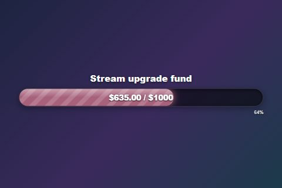
Płynny pasek celu (Fluid Goal Bar)Szeroki animowany pasek.style=bar Miernik celu (Goal Meter)Pasek z ostatnimi wspierającymi.
Miernik celu (Goal Meter)Pasek z ostatnimi wspierającymi.style=meter Kompaktowy pasek (Compact Bar)Mały, do narożnika.
Kompaktowy pasek (Compact Bar)Mały, do narożnika.style=compact Pionowy pasek (Vertical Bar)Wysoki, do bocznej kolumny.
Pionowy pasek (Vertical Bar)Wysoki, do bocznej kolumny.style=vertical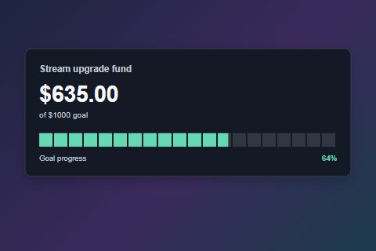
Pasek segmentowy (Segmented Bar)Dwadzieścia czytelnych bloków.style=segmented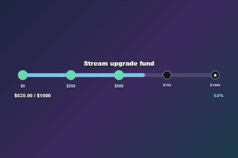
Ścieżka kamieni milowychZapala się pięć punktów kontrolnych.style=milestones Pasek XPPasek poziomu jak w grze.
Pasek XPPasek poziomu jak w grze.style=xpbar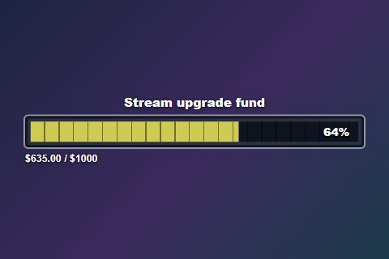
Pasek zdrowiaGruby pasek w stylu RPG.style=healthbar BateriaŁaduje się od czerwonego do zielonego.
BateriaŁaduje się od czerwonego do zielonego.style=battery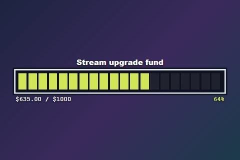
Pasek pikseliBlokowy miernik w stylu retro.style=pixelbar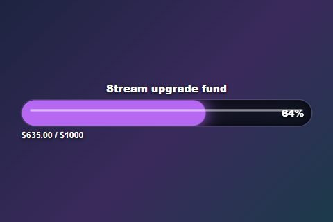
Rurka neonowaŚwiecąca, migocząca rurka.style=neonbar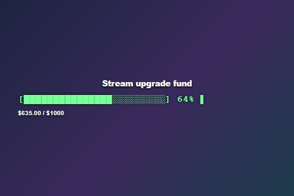
TerminalPasek ładowania w starym stylu.style=terminal
Słoiki i przedmioty
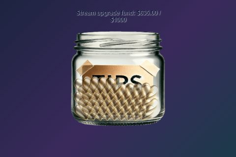
Klasyczny słoikOryginał ze spadającymi przedmiotami.style=jar Szklany słoik z końcówkąNapiwki wpadają przez wieczko.
Szklany słoik z końcówkąNapiwki wpadają przez wieczko.style=glassjar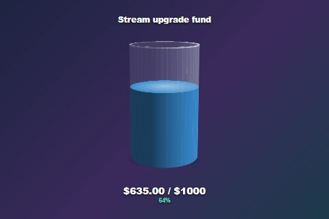
Obrotowy słoik 3DPowoli obracający się szklany pojemnik.style=jar3d Kufel do piwaPiana i bąbelki.
Kufel do piwaPiana i bąbelki.style=beermug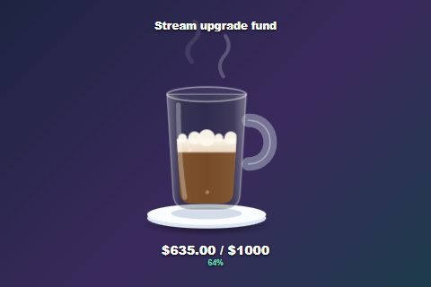
Kubek kawyZ unoszącą się parą.style=coffeemug Flaszka z miksturamiŚwieci i bulgocze.
Flaszka z miksturamiŚwieci i bulgocze.style=potion SkarbonkaKołysze się przy każdym napiwku.
SkarbonkaKołysze się przy każdym napiwku.style=piggybank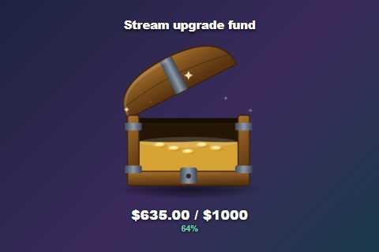
Skrzynia skarbówWieko otwiera się w miarę napełniania.style=chest TermometrKlasyczny wygląd zbiórki.
TermometrKlasyczny wygląd zbiórki.style=thermometer WybierzPrzesuwająca się wskazówka.
WybierzPrzesuwająca się wskazówka.style=gauge
Panele i tekst
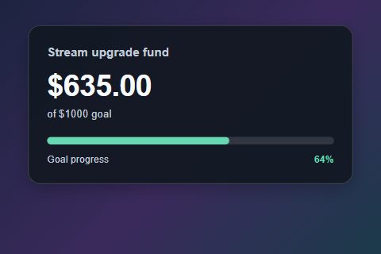
Karta celu (Goal Card)Duża suma, wąski pasek.style=card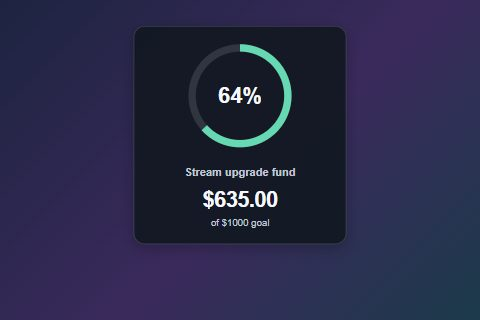
Pierścień postępu (Progress Ring)Okrąg z wartością procentową.style=ring Dolny pasek (Lower Third)Niski i szeroki.
Dolny pasek (Lower Third)Niski i szeroki.style=lowerthird MinimalneTylko duże liczby.
MinimalneTylko duże liczby.style=minimal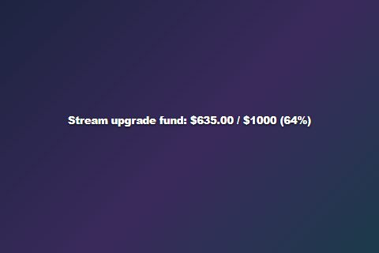
Tylko tekst (Text Only)Jeden wiersz tekstu.style=text
Szybkie zmiany
Większość z nich jest dostępna w ustawieniach Tip Jar. Możesz też dopisać kod na końcu linku nakładki.
| Chcę… | Dodaj do linku |
|---|---|
Ukryj znaki dolara (0 / 500) | &hidecurrency |
| Zmień to, co wpada do słoika | &dropitem=coins · również gems, stars, bills, hearts |
| Zmień efekt świętowania | &celebration=confetti · również hearts, fireworks, none |
| Zmień kolory wypełnienia Fluid Goal Bar | &fillstart=%2366d9b2&fillend=%23ffcc88 (kolory szesnastkowe, z %23 zamiast #) |
| Ustaw akcent w nowszych panelach, słoikach lub miernikach | &accent=%23ffcc88. Dla Fluid Goal Bar użyj powyższych kolorów wypełnienia. |
| Ukryj tytuł lub procent w nowszych słoikach i miernikach | &hidetitle · &hidepercent. Nie dotyczą każdego stylu; sprawdź podgląd. Cztery poniższe panele obsługują również hidepercent. |
| Zmień etykietę Glass Tip Jar | &jarlabel=TIPS |
| Zatrzymaj obracanie słoika 3D | &nospin |
| Użyj własnego obrazu słoika (tylko klasyczny słoik) | &jarimage=https://… |
| Użyj jednolitego wypełnienia lub gradientu | &fillmode=solid · &fillmode=gradient |
| Użyj nowszego wyglądu w starszych stylach | &refresh |
Dodatkowe opcje dla Goal Card, Progress Ring, Lower Third i Segmented Bar
- Motyw: Domyślny, Neon lub Złoty.
- Przezroczysty panel:
&panelopacity=0.5(od 0 do 1). - Większa suma:
&amountsize=32(od 12 do 96 pikseli).
Własne kolory wypełnienia mają pierwszeństwo przed accent. Zostaw pole puste, aby zachować domyślny wygląd stylu. Rozmiar tekstu paska i „tylko pasek” dotyczą wyłącznie Fluid Goal Bar.
Co liczy się do celu
Wybierz jedno. Zmiana wyglądu (słoik, pasek itd.) nigdy nie zmienia tego, co jest liczone.
Super Chaty, Bits, napiwki i inne darowizny dodają swoją wartość.
$63.50 / $100
Każda darowizna dodaje jeden, niezależnie od kwoty.
7 / 20 Super Chatów
Wpłaty oraz subskrypcje, wspieranie i podarowane subskrypcje.
340 / 1000 punktów
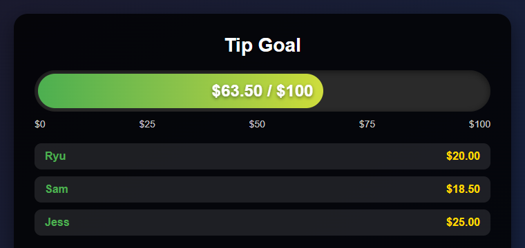
Licz Super Chaty zamiast pieniędzy
- Pozostaw Punktacja Hype Cup (Hype Cup Scoring) wyłączone.
- Ustaw Cel mierzy (Goal measures) na Liczba kwalifikujących się wpłat.
- Ustaw Filtr źródła na YouTube.
- Ustaw Filtr płatnych zdarzeń (Paid event filter) na Tylko Super Czaty (Super Chats only).
- Ustaw cel, na przykład
20.
Super Chat za 1 USD i za 100 USD dodają po jednym. Aby liczyć także Super Stickers, zmień filtr płatnych zdarzeń. Etykieta jednostki licznika (Count unit label) zmienia wyświetlane słowo.
Licz także subskrypcje i wspieranie
- Włącz Punktacja Hype Cup (Hype Cup Scoring).
- Pozostaw Filtr rodzaju wpłat na Wszystkie wpłaty (All donations).
- Ustaw, ile punktów jest warte każde zdarzenie (poniżej).
| Ustawienie | Co robi |
|---|---|
| Punkty za subskrypcję/wspieranie | Punkty za każdą nową subskrypcję lub odnowienie. |
| Punkty za podarowane subskrypcje/wspieranie | Punkty za prezent. 5 prezentów = 5 × ta liczba. |
| Punkty darowizny za USD | Punkty za każdego przekazanego dolara. |
| Etykieta jednostki punktów | Wyświetlane słowo lub symbol, np. pts. |
Jak liczone są prezenty YouTube
| Zdarzenie YouTube | Jak nalicza |
|---|---|
| Super Chat / Super Sticker | Wartość pieniężna przy celu kwotowym, jeden przy liczeniu darowizn lub skonfigurowane punkty darowizny w trybie Hype. Zdarzenie musi przejść przez filtry. |
| Członkostwa w prezencie | Tylko Hype: liczba prezentów × punkty za prezent. YouTube nie podaje ceny, więc wartość pieniężna jest nieznana. |
| Ktoś otrzymuje prezent | Domyślnie pomijane, aby prezenty nie były liczone podwójnie. |
| Jewels / wirtualne prezenty | Użyj odpowiedniego filtra typu darowizny. |
Włącz tylko Licz również indywidualnych odbiorców prezentów (Count individual gift recipients too) jeśli chcesz dodawać punkty oprócz samego prezentu.
Gdy cel się zapełni
| Chcę, aby cel… | Użyj tego |
|---|---|
| Pozostawać pełny do zresetowania | Domyślnie dla celów pieniężnych i licznikowych. |
| Zaczynać od nowa po wypełnieniu | Domyślnie dla celów Hype. Opóźnienie zakończenia określa, jak długo cel pozostaje pełny. |
| Zachowywać nadmiarowe punkty przy ponownym starcie | Przenoś nadmiarowe punkty (Carry extra points) |
| Dalej liczyć i zwiększać cel | Zachowuj sumę i zwiększaj cel (Keep total and advance target) |
| Przechodzić przez poziomy (100, 200, 300…) | Przyrost powtarzanego celu (Recurring goal increment) |
| Pamiętać sumę po ponownym uruchomieniu | Zachowuj kwotę między sesjami (Keep amount between sessions) |
Rozwiązywanie problemów
| Problem | Spróbuj tego |
|---|---|
| Nic się nie aktualizuje | Sprawdź, czy źródło jest włączone, identyfikatory sesji są zgodne, a filtry przepuszczają to zdarzenie. |
| Wspieranie lub subskrypcje nie są liczone | Włącz punktację Hype Cup i ustaw filtr typu darowizny na wszystkie darowizny. |
| Podarowane wspieranie dodaje za mało | Używają ustawionych punktów za prezenty, a nie ceny. Zwiększ liczbę punktów. |
| Podarowane wspieranie jest liczone podwójnie | Wyłącz liczenie pojedynczych odbiorców prezentów. |
| Podarowane wspieranie nie powinno się liczyć | Włącz wykluczanie podarowanego wspierania YouTube. |
| Suma spada do zera przy osiągnięciu celu | Cele Hype domyślnie zaczynają od nowa. Użyj „Zachowaj sumę i zwiększ cel”. |
| Powraca stara suma | Włączono zachowywanie kwoty między sesjami. Zresetuj kwotę. |
| Licznik Super Czatów obejmuje Super Naklejki | Ustaw Paid event filter na Super Chats only. |
Przyciski testowe wysyłają tylko darowizny. Aby sprawdzić wspieranie lub prezenty, obserwuj dok albo panel zdarzeń tej samej sesji i sprawdź, czy zdarzenie dociera.